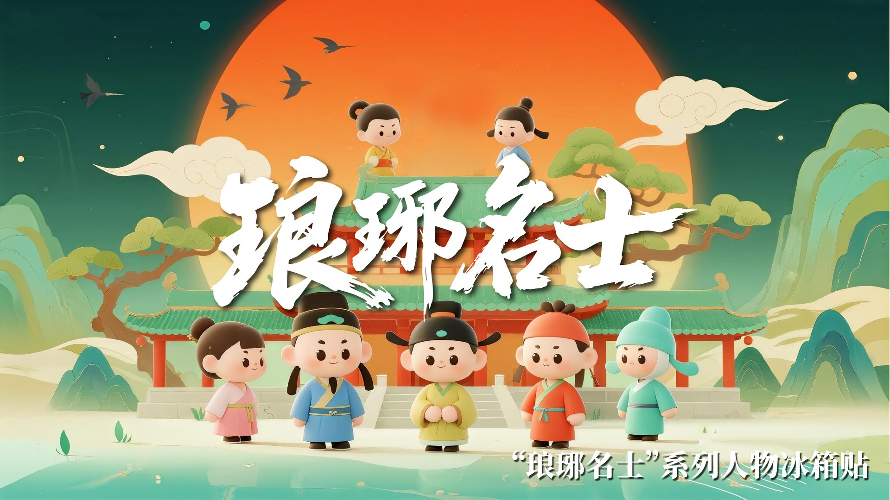
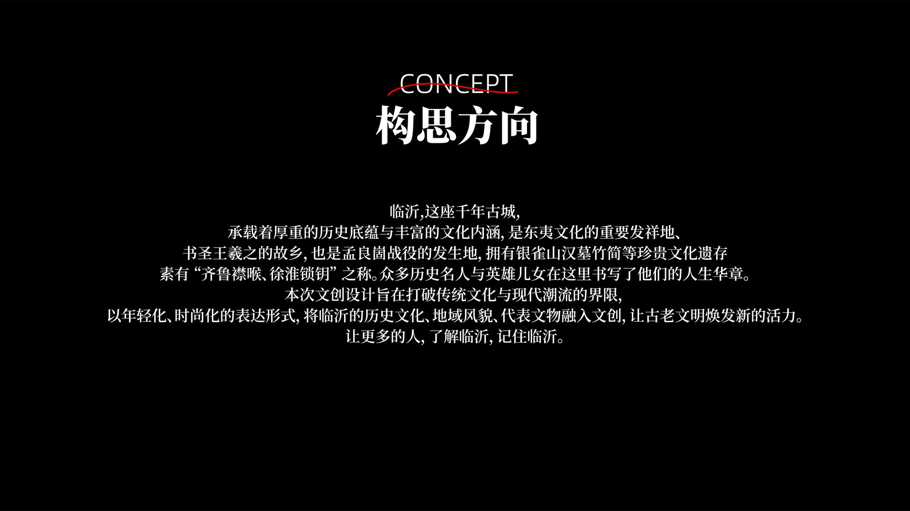
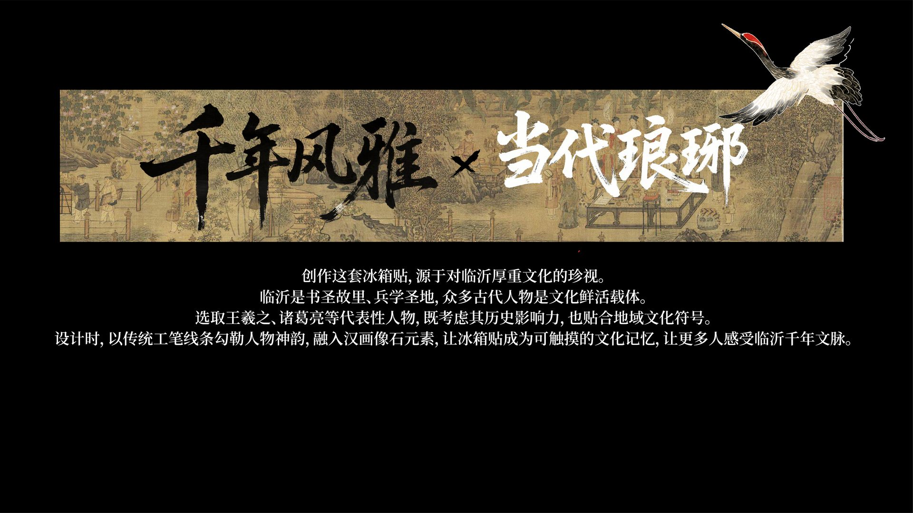
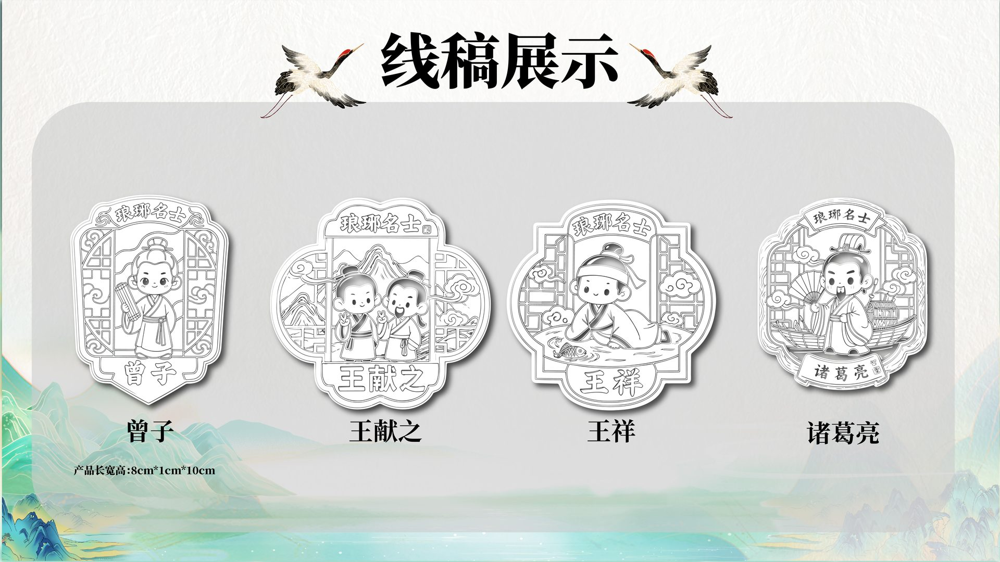
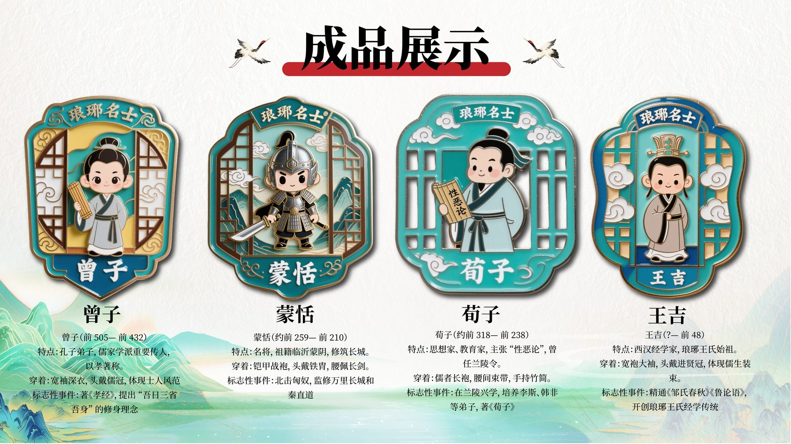
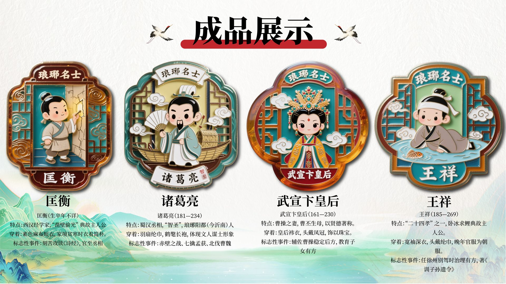
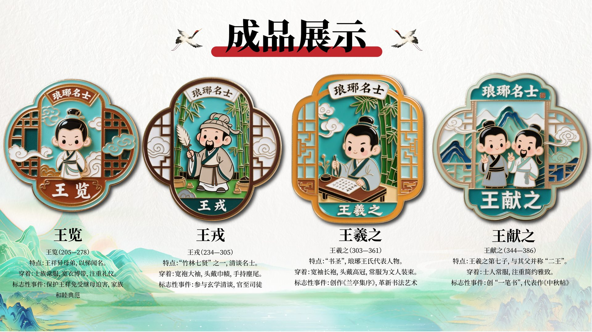
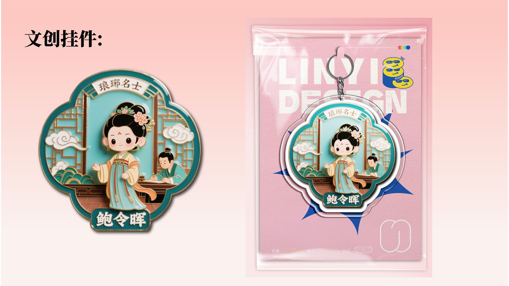
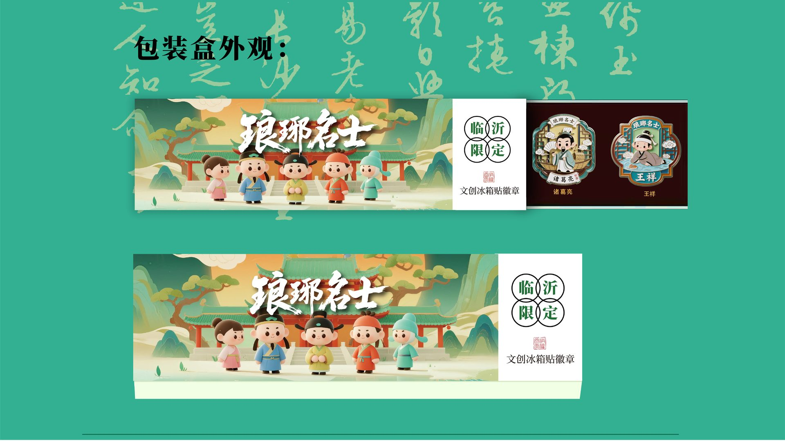
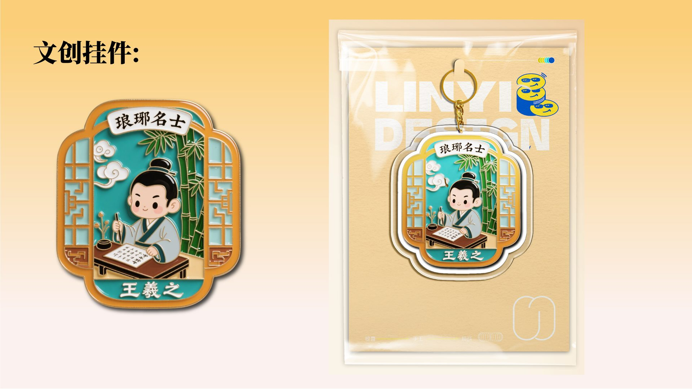

works / langya
琅琊名士 · 冰箱贴文创
LANGYA MASTERS · FRIDGE MAGNET CULTURAL SERIES
以琅琊历史文化名士为题材的 Q 版卡通冰箱贴文创系列：从构思方向、团体主视觉、名士造型线稿，到 12 位名士的珐琅彩成品阵列与文创挂件独立包装，覆盖设计、打样到落地售卖的完整链条。

系列团体主视觉 / Key Visual
暖橙落日与青绿山水之间，五位 Q 版名士立于古城门前——书法笔触的「琅琊名士」点题，让历史名人以轻松亲切的方式走入日常。

构思方向 / Concept
临沂是书圣故里、孝圣故里，智圣与算圣的故乡。设计以历史底蕴为根，用年轻化、时尚化的表达把地域文化与现代潮流链接，让更多人了解临沂、记住临沂。

千年风雅 × 当代琅琊 / Design Philosophy
选取曾子、王祥、诸葛亮等在临沂有多处历史影响力、也契合琅琊文化符号的名士；以传统工笔线条勾勒人物神韵，融入汉画像石元素，让冰箱贴成为可触摸的文化记忆。

线稿展示 / Line Art
曾子、王献之、王祥、诸葛亮的线稿阶段：海棠形轮廓内以工笔线条完成窗棂、山水与人物的分层结构，并标注 8cm×1cm×10cm 的产品长宽高，为打样提供直接依据。

成品展示 · 儒风先贤 / Finished Works I
曾子、蒙恬、荀子、王吉：每个人物配以生卒年、特点与标志性事件的小传，珐琅彩工艺还原窗棂与云纹的层次，让「考据」与「可爱」并存。

成品展示 · 书门风雅 / Finished Works II
王览、王戎、王羲之、王献之——琅琊王氏一门四杰：卧冰求鲤的孝、竹林清谈的逸、墨池书扇的艺、与父亲并称「二王」的书法传承，各成一格。

成品展示 · 琅琊群星 / Finished Works III
凿壁偷光的匡衡、羽扇纶巾的诸葛亮、临朝称制的武宣卞皇后、卧冰求鲤的王祥——金框与青绿底色的搭配让十二位名士成系列而不重复。

文创挂件 · 鲍令晖 / Charm · Bao Linghui
以女诗人鲍令晖为原型的挂件款：成品挂坠配独立opp袋零售包装，粉蓝撞色袋面延续系列主视觉，让文创从冰箱走向随身。

文创挂件 · 王羲之 / Charm · Wang Xizhi
书圣主题挂件款：竹窗书案前的小王羲之执笔临池，金框海棠轮廓配金色挂绳与米金零售袋，呼应其书法传承的文化身份。

包装盒外观 / Packaging Design
两款礼盒方案：绿色主视觉款以名士群像与「临沂限定」印章直接传达地域身份；墨绿雅致款以王祥、诸葛亮单像搭配「临沂文创木质相徽章」，覆盖日常与礼赠两个场景。